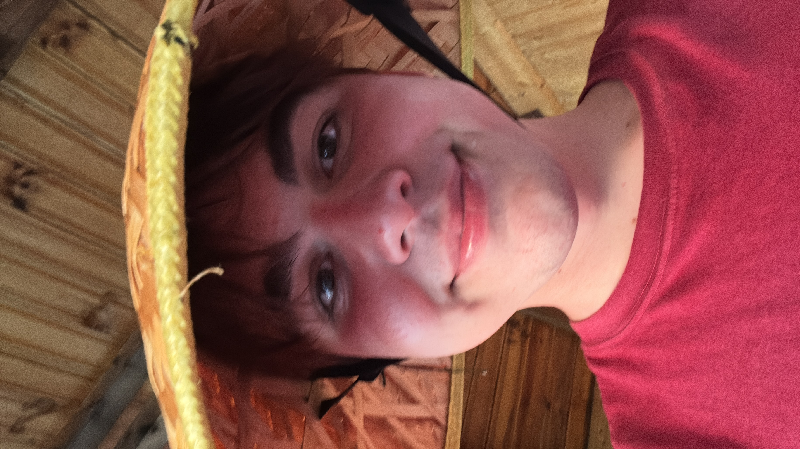
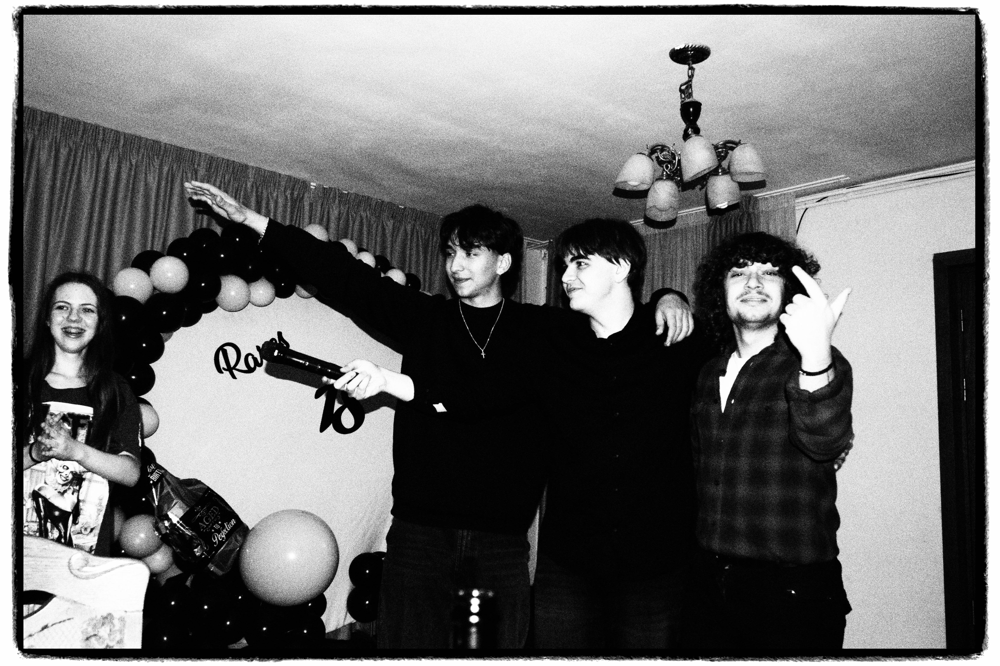
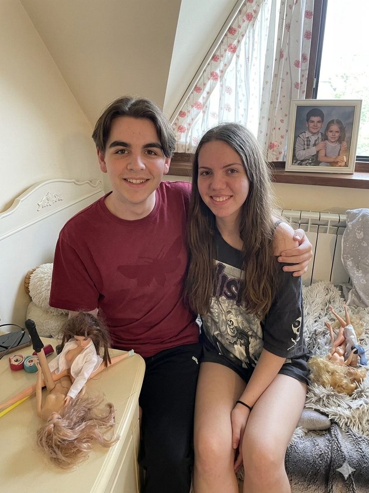

Asta sunt eu
O sa imi fac un blog la 25 de ani
Nu am ceva mai bun de facut in momentul de fata asa ca am decis sa fac asta.
v Ce imi place sa fac
- > Sa ma joc: Sunt un chud
- > Sa mananc: Sunt gras
- > Sa fumez: Daca fac un tierlist o sa il atasez
v Poze bune

Ce-a mai bomba petrecere

Am luat bacul

Se putea sa semanam mai rau